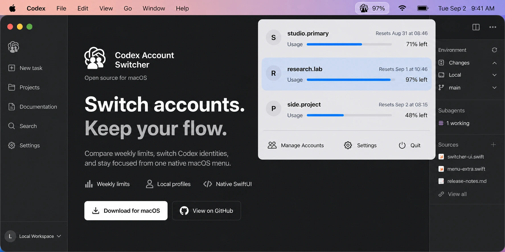

Personal and work
Separate identities without separate computers.
Move between personal projects and managed workspaces while keeping each Codex login available locally.
Open source by liuzhao1225
Switch personal, work, and client Codex accounts without repeating browser logins, compare weekly usage, and continue from one native macOS menu.

Keep the account for the next repository clear before Codex Desktop opens.
Personal and work
Move between personal projects and managed workspaces while keeping each Codex login available locally.
Consultants and client work
Save multiple authorized Codex profiles and confirm the active identity before opening a client repository.
Long Codex tasks
Compare remaining allowance and reset times across saved accounts from the macOS menu bar.
See the active profile, remaining weekly allowance, and reset time before deciding which Codex account should take the next task.

A focused native utility with local authentication profiles, clear usage context, and one deliberate switch action.
See remaining weekly allowance and reset time for every saved account.
Each saved identity keeps its own local authentication snapshot.
Launch at login keeps the switcher waiting in the macOS menu bar.
Use English, Simplified Chinese, or follow macOS automatically.
The order stays simple because every action has one job.
Import the current Codex login or add another account.
Check allowance and reset time directly from the menu bar.
Let the app update the active profile and reopen Codex Desktop.
Direct answers about multiple accounts, Codex Desktop, CLI behavior, local storage, and privacy.
Read the complete multiple-account switching guide →Save each account once, then select the active profile from the macOS menu bar without repeating the full browser login flow. Use accounts you own or are authorized to use, including personal, work, and client accounts.
The app closes and reopens Codex Desktop after a confirmed switch. Existing CLI processes keep their loaded state; newly started Codex CLI processes use the selected authentication.
Yes. The macOS menu compares the remaining weekly allowance and reset time for every saved profile, so you can choose an account before starting a long Codex task.
Saved authentication snapshots use user-only local directories under Library Application Support. The active Codex credential remains at ~/.codex/auth.json.
No. Every account switch is manual and confirmed. The app does not run a proxy, route model traffic, or automatically rotate accounts.
No. Codex Account Switcher is independent MIT-licensed open-source software for macOS.
The app uses independent local profile directories and runs without an account proxy or routing service.
Credentials stay inside local Codex profile directories.
Existing terminal processes keep their current runtime state.
Every switch stops on the first reported error.
Available now
Download the Apple Silicon build, move it to Applications, and keep your next account ready.
The current app and DMG are Developer ID signed, Apple notarized, and stapled for normal macOS installation.